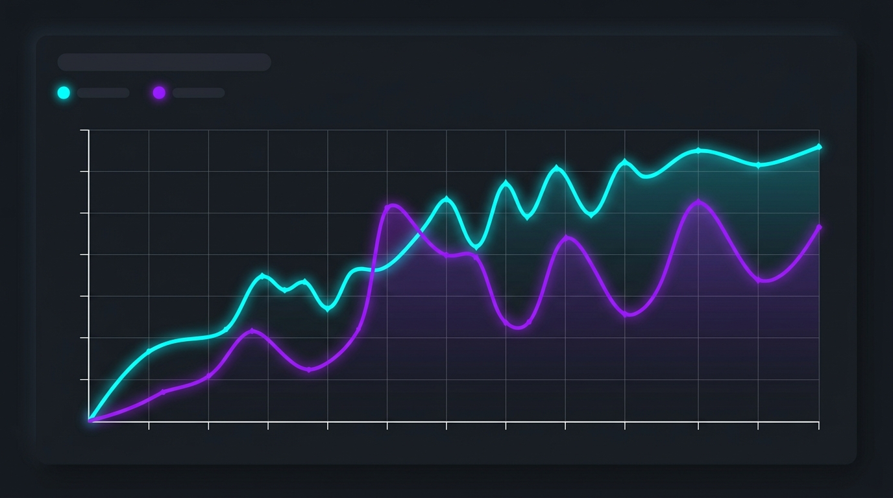

Overview
Pending MLEF Reports
12
Pending PM Reports
4
Active Court Cases
28
Evidence Logged Today
15
Case Statistics Overview
Clinical Cases
Autopsy Cases

Quick Actions
Recent Medico-Legal Cases
| Case ID | Patient / Deceased | Type | Police Ref | Status | Action |
|---|---|---|---|---|---|
| #CAS-2026-001 |
JD
John Doe
|
Clinical (Assault) | PS-3059 | MLEF Pending | View |
| #CAS-2026-002 |
JS
Jane Smith
|
Autopsy (RTA) | PS-47169 | Awaiting Histology | View |
| #CAS-2026-003 |
U
Unknown Male
|
Autopsy (Suicide) | B.S. Jayalath | Report Issued | View |